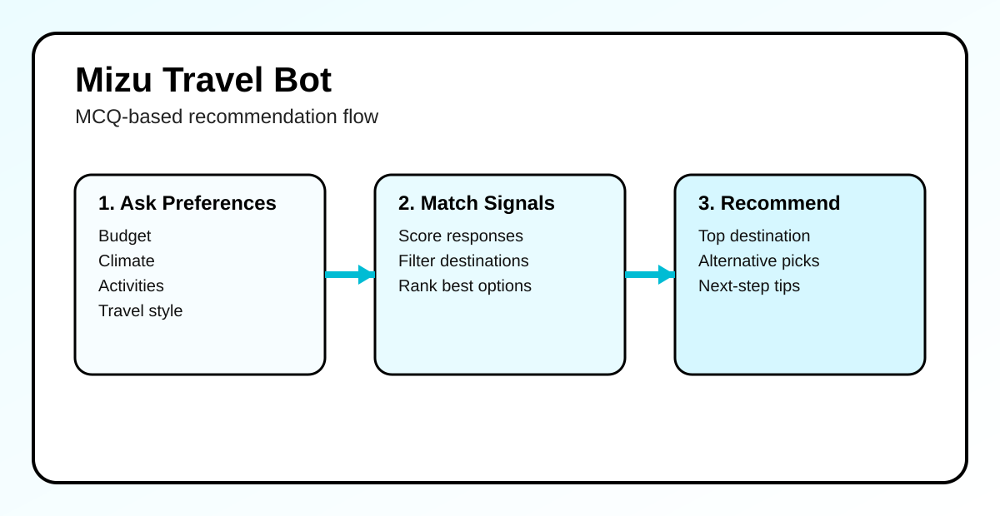

I am a Software Engineer II at Sallie Mae, focused on building reliable mobile experiences and scalable backend integrations.
My background includes iOS/macOS engineering, serverless API development, and shipping production features across fintech,
security, and startup products.
Value statement: I help teams turn complex product ideas into secure, maintainable software by combining thoughtful architecture,
modern Swift development, and practical cloud services.
I currently maintain and develop the Sallie Mae iOS mobile app and contribute middle-layer APIs using AWS Lambda.
Previously, I worked at Everykey on password manager features for iOS/macOS, including passkey attestation, Bluetooth-based
communication, and CryptoKit-backed security workflows. Across roles, I focus on high-quality implementation, clean architecture,
and building features that are both user-friendly and technically dependable.
Course Artifacts
Each artifact includes required assignment metadata so reviewers can quickly evaluate scope, process, and outcomes.
Course: Machine Learning Fundamentals (AIML-500) | Module/Week: Group Project

In this group project, we built a Mizu bot that helps users choose a travel destination based on their preferences.
The bot guides users through a conversational flow using MCQ-style questions and narrows recommendations using user-provided constraints,
showing how AI-assisted interaction can support decision-making in a practical scenario.
This assignment compares a simple machine learning use case with a deep learning use case and explains why each approach fits its problem.
For machine learning, I used Gmail spam detection as a real-world example and discussed how layered signals like content patterns,
sender reputation, authentication checks (SPF, DKIM, DMARC), and user behavior can support efficient spam classification without the
computational overhead of deep learning. For deep learning, I used Tesla Autopilot/FSD and explained why high-dimensional, real-time
visual and sensor data makes deep learning a better fit than traditional feature-engineered models.
This work demonstrates my ability to evaluate model suitability based on data complexity, task requirements, and performance tradeoffs.
This artifact is a reflection on adapting to challenges in leadership and decision-making. I wrote about taking on app release
ownership as an iOS developer, the pressure of guiding teammates while still being one of the newest members, and what I learned
about leading with humility, consistency, and openness to growth.
Overall, this artifact shows how I am developing my approach to leadership and handling challenges more thoughtfully in a
professional setting.